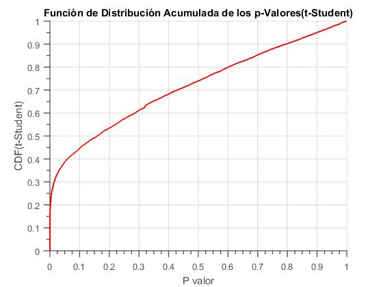
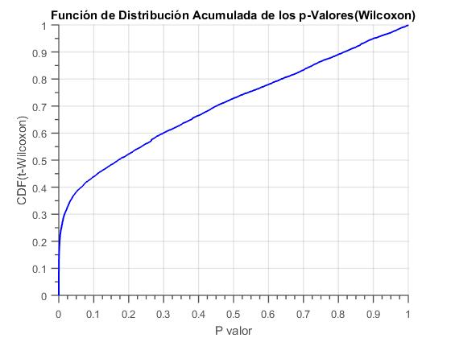
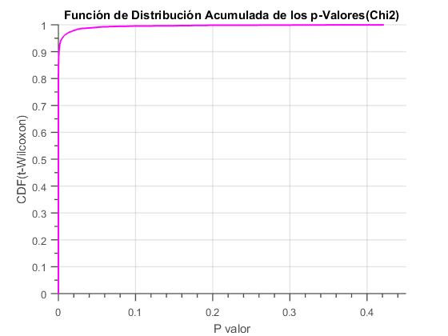

RETURN
Feature Selection
Once the data set D available, the next step to make is
between all measurements, find a subset of values Dred =
{(m/z)k, ik}, 1 < k < n here the intensities and relationships
mass radius k-esimas must be statistically cant based
on criteria that prove how high is the degree of intergroup
discrimination that these possess.
For this stage we have designed a statistical filter combining
t-Student and U-Mann-Whitney. The criteria of these tests is
to be complementary, as the first assumes that the analyzed
groups have a Gaussian probability distribution, while the
Mann-Whitney assumes that the probability distribution of
the analyzed groups is the same, but not It imposes the
condition that this is Gaussian[.The process is performed
by subjecting fi lter data analysis groups G1 and G2 of set
D separately for each of these statistical tests. The application
of these tests p − values that define the probability
of variation in the ik − esimos values of intensities of the
Mm , measurements are obtained p-values whose probability
tends to zero indicate variations in the values of intensity
lies a high power of discrimination Intergroup. It is very
difficult to define how many of these values are needed to
define the patterns of biomarkers, however it is possible to
estimate how many of these values decrese the maximum
error of intergroup discrimination based on the use of algorithms
classified supervised cation.
Algorithms supervised classification have been widely used in applications relating
to the analysis of mass spectrometry data.
However algorithms based on Bayes theory, support vector machine, knearest
neighbors, and even neural networks require additional
processing to change the original characteristics of group D
to those required as input parameters of these algorithms. This
additional processing limits the amount of information that can
be extracted from the sets, as groups should be statistically
analyzed fi cient matrix of the data set must be square, not
negative, and reversed. These limitations are solved through
algorithms based on Boosting-Learning on binary decision
trees.
In each test two vectors independent of p-values, p1 y p2 ,
of dimension n. Then, with each of these vectors are estimated
probability functions over which is fixed an approximate value
η pairs of {(m/z)k, ik} , whose value p tends to zero. LThen
for p-values of the two statistical tests two binary classification
ers are modeled using algorithm AdaboostM.1 based on the
analysis groups G1 and G2 , where randomly obtained measurements
that were part of the set of training and testing of
classified modelinger. In each of the tests, once the structure of
the classifier established iteratively be changing the dimension
of joint training and testing from 1 to η, to find a point of
inflection in ζ pares de {(m/z)k, ik} dwhere classi fi cation
error is minimized by the presence of infraentrenamiento
or overtraining in classifiers. The resolution step depends
iteration of the available computing power, however, it can
be from a certain resolution and gradually increase, the point
of inflection error classi fi cation does not change, this way
you can get an accurate number of pairs {(m/z)k, ik} ith a
high degree of intergroup discrimination. Here comes a new
subset, fixed by the inflection point performance of classifiers.
In this new subset of features that cause errors of classi fi
cation, usually caused by noise problems that could not be fi
lter desecharan in previous stages. At this point they have been
defined areas biomarcacion where pairs {(m/z)k, ik} tend to
be redundant, to eliminate this redundancy in addition to fi
lter a grouping of data was conducted based on the average
of the indices {(m/z)k} defined by the point of inflection in
pairs ζ. The grouping is done looking for a number of groups
based on the averages of each of the areas marked above.n the
last part the two closest to the average of the areas marked
discarding the other indexes are taken. Thus it is eliminating
redundant information and modeling classi fi ers of a number
of pairs {(m/z)k of a high degree of intergroup discrimination
is strengthened. Finally the indices of the pairs {(m/z)k, ik}
of each of the statistical tests are combined, thereby obtaining
the reduced data set Dred = {Im×k, M/Z}. This procedure
is shown in Figure 3.
This section describes the methods used to reduce data dimencionalidad explained.
This process is to select the percentage of samples that will be discarded based on the results
of statistical tests performed. The dimensionality reduction is essential in terms of computational
time optimization and reduction processing the effects of over-training and under-training at the
stage of pattern classification.
T-test
Test T-test is a parametric test that helps in checking a property assuming some hypotheses on data. This test
using the Student t-distribution, this dristibución is a family of curves that varies depending on the degrees of freedom.
To apply the t-test is assumed that:
1.The distribution of data should follow a Gaussian or normal curve.
2. The standar deviation of the data are unknown but are assumed to be equal.
Hypotheses to test: Verify that the means of two groups of samples are equal. Where the data
of each sample can be vectors or matrices. To apply the test is necesary define the statistical "t",
that helps to accept or reject the hypothesis by comparing the "t" calculated with "t" defined
Statistical tables available.
Calculating the statistic is computed as follows:

with:

Where, uA and uB are the mean of each group, s standar deviation,
sA y sB estimating the standard deviation of the samples obtained
available test and MA, MB are numbers of examples in each distribution.
According to probability and the confidence interval the hypothesis
is accepted or rejected. Test data processing mass spectrometry confidence
level of 95% and 5% error is stable.

In the image to be observed that a small number of samples differ from others, so that their means are not equal.
These few examples give us information of highly discriminating data.
U de Mann-Whitney
It is a non parametric test that helps determine whether two samples have equal data medium.
The samples studied do not follow a normal distribution. Statistical U is the minimum value between U1
and U2 which is defined by the following formula:

where,
n1 and n2 are the sample sizes
R1 and R2 are the sum of the rank order of the first and second
samples respectively. It then calculates "z" defined as a contrast statistic to compare
with a critical "z" and accept or reject the hypothesis.

The statistic used to compare the critical "z" with the calculated "z" and
finally accept or reject the hypothesis.


Chi-Cuadrado
Chi-square test (χ²) is a nonparametric test that measures the discrepancy between observed frequencies
distribution and other theoretical or expected frequencies, indicating to what extent the differences between the
two, and also can test the independence between the two variables.

Where:
Oi = Observed absolute frequency
Ei = Expected frequency Ei=n*pi where n is the sample size and pi the probability of the null hypothesis.
K-1 is the degrees of freedom for a larger n.

Resultado Conjunto Arcene
A continuación se presentan la Función de Distribución Empírica Acumulada para el conjunto Arcene luego de aplicar las 3 pruebas
de Selección de Características(Reducción de dimencionalidad).
La figura muestra que el aproximadamente el 25% de las caracteristicas tiene probabilidad de ocurrencia nula con esta prueba

La figura muestra que el 20% de las caracteristicas tiene probabilidad de ocurrencia nula con esta prueba

La prueba de Chi-cuadrado es demaciado optimista pues muestra que casi el 95% tiene bajas probabilidades de aparecer.

RETURN